Unternehmensprofil
Vectron im Rückblick
Meilensteine einer Erfolgsgeschichte
01
- 2025
VECTRON SMART auch in Österreich Im Februar wurde das Komplettpaket aus Kasse, Payment, Cloud und Service auch in Österreich auf den Markt gebracht.
Vectron Order Hub Seit Oktober ist der Vectron Order Hub, ein smartes Monitor-System für Küche, Bar und Snackstation erhältlich. Bestellungen werden strukturiert und intelligent priorisiert auf Monitoren angezeigt, immer direkt an der richtigen Zubereitungsstation. Das beschleunigt die Kommunikation und jede Station weiß stets, was zu tun ist. Ausdrucke auf Papier können entfallen, was auch der Umwelt zugute kommt, und der Geräuschpegel in der Küche wird gesenkt.
- 2024
Shift4 Im Juni 2024 erfolgte der Zusammenschluss mit Shift4. Der in New York börsennotierte US-Konzern mit mehr als USD 2,5 Mrd. Umsatz (2023) ist ein führender Anbieter von Software- und Zahlungsabwicklungslösungen. Shift4 bedient Betreiber aller Größenordnungen aus zahlreichen Branchen, von kleinen inhabergeführten Geschäften vor Ort bis hin zu multinationalen Konzernen, die weltweit Handel treiben. Letztere können durch den Unternehmenszusammenschluss künftig in den USA und Europa nahtlos bedient werden. Shift4 wird die aktuelle Geschäftsstrategie der Vectron Systems AG strategisch und finanziell unterstützen, um die Marktposition auszubauen und Wachstumsstrategien in Deutschland und weiteren europäischen Märkten zu fördern. Vectron wird die Zahlungslösung von Shift4 in Deutschland und mehreren europäischen Ländern vertreiben.
VECTRON SMART: Kasse, Payment, Cloud und Service Im November wurde VECTRON SMART eingeführt, ein Komplettpaket aus Kasse, Payment, Cloud-Diensten und Service vor Ort. Der Tarif beinhaltet modernes Karten- und Online-Payment von Shift4 sowie zwei mobile Terminals, auf denen auch Vectrons Kassenapp läuft. Zahlreiche digitale Services sind inklusive: Absatzförderndes Inhouse-Ordering mit dem Gäste am Tisch selbst bestellen und Online-Checkout mit dem diese auch selbst online zahlen können. Weitere Services sind Online-Ordering, Tischreservierung, digitale Gutscheine, Digital-Bon, mobiles Reporting und Sicherheitsmodule wie Rechnungs-, Berichts- und Fiskalarchiv, Kassen-Updates und Kassen-Backups. Alle Services sind nahtlos in die Kasse integriert, sparen Zeit und minimieren Fehlerquellen. Beratung, Installation und Service erfolgen durch den Vectron-Händler vor Ort. Vectron-Kassensysteme können mit VECTRON SMART unschlagbar günstig gemietet werden.
- 2023
Inhouse Ordering Vectron präsentiert im März auf der Internorga mit dem Inhouse Ordering die erste einer Reihe von geplanten neuen Ordering-Lösungen
POS M4 Pay Im September bringt Vectron mit der POS M4 Pay eine mobile Kasse auf den Markt, die durch eine integrierte SoftPOS-Lösung zugleich Zahlungsterminal ist.
- 2022
Vectron POS 7 Mini Die POS-7-Reihe wird im Januar um die besonders kompakte POS 7 Mini ergänzt.
Vectron A77 PLUS Die schlankere Variante zum A920 PLUS ist EC- und Bestell-Terminal in einem Gerät und seit August auf dem Markt.
Vectron POS M4 Seit September gibt es mit der POS M4 die erste androidbasierte Mobilkasse von Vectron.
Dezember: Vectron übernimmt acardo Im Handelssegment ist die acardo group AG einer der führenden Anbieter für Consumer-Activation-Tools, wie Coupons, Cashback-Lösungen und Konsumenten-Apps in Deutschland. Diese werden in mehr als 30.000 Filialen, bestehend aus Lebensmittelhändlern, Drogerien, Kinos und Apotheken eingesetzt. Zu den Kunden zählen bspw. EDEKA, Müller, Nestlé, Unilever, Kellogg´s, Krombacher, Coca-Cola, PEPSI, Beiersdorf, Hexal, CinemaxX, Cineplex, Universal und Warner Bros.
- 2021
Neue Cloud- und Payment-Produkte Das Angebot an Cloud-Lösungen für die Marken Vectron und Duratec wird im April deutlich erweitert, u.a. mit eigenen Payment-Lösungen und einer Anbindung an das DATEV Kassenarchiv online.
Vectron A920 PLUS Das revolutionäre neue Terminal für alle Anwendungsbereiche ist Kassenapp, Kartenleser und Rechnungsdrucker in einem einzigen Gerät. Es kommt im Oktober auf den Markt.
Vectron POS 7 PC Ab November steht die Vectron POS 7 auch als PC-Version mit Windows 10 IOT Betriebssystem zur Verfügung.
- 2020
myVectron Digital-Bon Im Zuge der Diskussionen um die Bonausgabepflicht bringt Vectron im März eine digitale Bonlösung auf den Markt.
Wägeplattform SC50 Im April führt Vectron eine auf die Kassensysteme abgestimmte eigene Wägeplattform ein. Eine Lösung für Metzgereien, Hofläden und andere Betriebe, die grammgenau abwiegen müssen.
Vectron POS 7 Im August führt Vectron mit der POS 7 eine neue modulare High-End-Kassenlösung ein.
- 2019
Vectron übernimmt restliche Anteile an posmatic Zum 01.01.2019 übernimmt Vectron die restlichen 25 Prozent der Anteile der posmatic GmbH. Die iPad Kassenlösungen von posmatic ergänzen das Vectron Portfolio als weitere Kassenmarke.
epay kooperiert mit Vectron Im März geben Vectron und epay die gemeinsame Kooperation bekannt. Ziel ist es, für Betreiber von Kassensystemen neue Funktionalitäten und Services gemeinsam zu entwickeln und anzubieten.
Relaunch der Corporate Site Im April relauncht Vectron die Corporate Site. Das neue Design und ein leistungsstarkes Backend sorgen für einen modernen Auftritt und unterstützen Vectron bei der Digitalisierung der Gastronomie und Bäckereibranche.
resmio und restablo kooperieren mit Vectron Im Mai schließt Vectron Kooperationsverträge mit dem Online-Reservierungssystem resmio und dem Online-Bestellsystem restablo ab, um weitere in die Kassensysteme integrierte digitale Services anbieten zu können.
Markteinführung Duratec digital world Im Juni startet Vectron mit einem neuartigen Produktbundle. Es kombiniert eine kostenlose Kassen-Komplettlösung mit digitalen Services wie bargeldlosem Zahlen, Online-Reservierung und -Bestellung. Kasse und Zubehör werden im Gegenzug für die transaktionsbasierte, kostenpflichtige Nutzung der Services zur Verfügung gestellt.
POS Touch 15 II Wide
Kassen mit zertifizierter TSE Als einer der ersten Hersteller kann Vectron bereits im Dezember Kassensysteme mit der ab Januar 2020 vorgeschriebenen technischen Sicherheitseinrichtung (TSE) ausliefern.
- 2018
Best of Market 2018: Vectron zum fünften Mal Sieger Die Leser der Fachmagazine First Class Magazin, GVmanager, 24 Stunden Gastlichkeit und Streetfood Business wählten Vectron zum fünften Mal in Folge zum „BEST of Market“ in der Kategorie Kassensysteme.
Neues Corporate Design
- 2017
Coca-Cola kooperiert mit Vectron Vectron und Coca-Cola investieren in die neue Generation der GetHappy App. Dazu haben beide Unternehmen einen Kooperationsvertrag geschlossen. Ziel ist es, gemeinsam die führende Online-Marketing-Plattform für den Außer-Haus-Markt aufzubauen. Zu diesem Zweck wird die seit 2015 bestehende GetHappy App mit den Stärken der bonVito-Technologie von Vectron verbunden. Mittels dieser Kassensystemintegration bieten sich für Außer-Haus-Markt-Kunden weitere Möglichkeiten ihre Gäste anzusprechen und zusätzliche Umsatzpotenziale auszuschöpfen. Unabhängig von der Kooperation werden die GetHappy App und die Vectron-Kassensysteme weiterhin getrennt voneinander nutzbar sein.
Vectron siegt erneut: Best of Market 2017 Die Leser der Fachmagazine First Class Magazin, GVmanager, 24 Stunden Gastlichkeit und Streetfood Business wählten Vectron zum vierten Mal in Folge zum „BEST of Market“ in der Kategorie Kassensysteme.
Einführung Reporting-App: myVectron Die neue myVectron Reporting-App zeigt die wichtigsten Performance-Daten des Unternehmens in Echtzeit.
- 2016
Vectron bestätigt Premiumstellung: BEST of Market 2016 Die Fachmagazine „first class”, „GV manager”, „24 Stunden Gastlichkeit” und „Schulverpflegung“ der B&L MedienGesellschaft mbH & Co. KG, München, haben auch 2016 im Rahmen der Internorga wieder die Auszeichnung „BEST of Market” an die besten Zulieferunternehmen der Branche verliehen. In der Kategorie Kassensysteme hat Vectron zum dritten Mal in Folge den Wettbewerb hinter sich gelassen und belegt erneut den ersten Platz. Bewertet wurden Qualität, Service und Preis-Leistungs-Verhältnis der Anbieter.
Vectron erwirbt Mehrheit an Posmatic GmbH Ende 2016 hat Vectron 75% des Kassensoftwarestartups Posmatic GmbH erworben. Das Unternehmen ist Hersteller einer Kassensoftware, die auf Apple-Hardware, wie z.B. iPads, iPods oder iPhones läuft.
- 2015
Vectron liefert Software für „Profilo Payment Systems“, Türkei Ein neues Touch-Kassenmodell des führenden türkischen Kassenherstellerr „Profilo Payment Systems“ wird künftig mit Vectron-Kassensoftware ausgestattet.„Profilo Payment Systems“ hat in den letzten 30 Jahren mehr als 2 Mio. Kassensysteme verkauft von denen rund 1 Mio. zurzeit noch im Einsatz sind. Das Unternehmen beschäftigt 2.300 Techniker an 360 Service-Filialen in der Türkei. Ermöglicht wurde die Kooperation durch Vectrons neue Vertriebsstrategie. Um neue Absatzmöglichkeiten zu schaffen, hat das Unternehmen im Zusammenhang mit der Einführung der günstigeren Zweitmarke Duratec im Herbst 2013 eine erheblich vereinfachte OEM-Version seiner Kassensoftware entwickelt. Diese OEM-Software ist jetzt Grundlage der Vereinbarung mit Profilo. Vectron geht davon aus, mit der sehr einfach zu installierenden und zu bedienenden OEM-Software künftig weitere Kooperationen mit Kassenanbietern weltweit abschließen zu können und das Geschäftsmodell dadurch deutlich auszuweiten.
Vectron POS Mobile Pro III
Vectron POS Touch 12
175.000 verkaufte Kassen
Vectron ist „Bestmarke 2015/16“ Bei der repräsentativen Bestmarke-Studie der Gastronomie-Fachzeitung "Allgemeine Hotel- und Gastronomie-Zeitung" (AHGZ) erzielte Vectron in der Kategorie Kassensysteme den Gesamtsieg. Zudem sahen die befragten Gastronomen und Hoteliers Vectron auch in fast allen Einzel-Disziplinen mit deutlichem Abstand an erster Stelle. In der Profilierungsdimension Qualität/Produktleistung, in die beispielsweise eine gleichbleibend hohe Qualität, Innovationskraft, Handhabung oder Möglichkeiten der Individualisierung einflossen, erreichte Vectron den 1. Platz, genauso wie in puncto Verlässlichkeit und im Bereich Serviceleistung. Ein weiteres für das Unternehmen positives Ergebnis der Studie ist, dass Vectron-Kassen unter den Studienteilnehmern nicht nur die bekanntesten, sondern auch die am häufigsten verwendeten waren.
- 2014
Einführung Vectron POS MobilePro II
Markteinführung Kundendisplay Vectron C100
Platz 1: BEST of Market 2014 Die Fachmagazine „first class”, „GV manager”, „24 Stunden Gastlichkeit” und „Schulverpflegung“ der B&L MedienGesellschaft mbH & Co. KG, München, haben im Rahmen der Internorga die Auszeichnung „BEST of Market” an die besten Zulieferunternehmen der Branche verliehen. Grundlage der Entscheidung war eine Online-Befragung von Entscheidern aus Hotellerie, Gastronomie und Gemeinschaftsverpflegung zwischen Oktober 2013 und Februar 2014, die durch eine Versendung an 39.000 Newsletter-Abonnenten gestützt wurde. Bewertet wurden Qualität, Service und Preis-Leistungs-Verhältnis der Anbieter. In der Kategorie Kassensysteme hat Vectron den Wettbewerb hinter sich gelassen und den ersten Platz belegt. Die feierliche Preisverleihung fand am Vorabend der Internorga im Restaurant Mazza in Hamburg statt.
Einführung des Vectron Journal Tool
- 2013
Mitarbeiterzahl: 130
Eigene Homepage für bonVito
Auslieferungsbeginn der Vectron POS Touch
Markteinführung Kundendisplay Vectron C75
Die 20.000ste Vectron POS MobilePro wird produziert
1.000ste bonVito-Filiale unter Vertrag
Duratec: Günstige Kassensysteme für die Gastronomie Mit Duratec führt Vectron eine zweite Marke für Kassensysteme ein. Mit der Modellreihe wird die gewohnte Vectron-Qualität einem breiteren Publikum zugänglich gemacht. Die robusten stationären Kassensysteme vereinen Sicherheit, Effizienz und Flexibilität mit sehr leichter Bedienung und einfacher Programmierung zu einem äußerst günstigen Preis, die ideale Kassensystemlösung für kleine bis mittelgroße Gastronomie-Betriebe. Die Duratec POS S15 ist das erste Modell der neuen Zweitmarke. www.duratec-systems.de
- 2012
bonVito in Amsterdam mit dem Horecava Innovation Award ausgezeichnet
Auslieferungsbeginn der Vectron POS Vario II
Markteinführung Kundendisplay Vectron C56
Gründung der bonVito GmbH Um die Entwicklungs- und Vertriebsaktivitäten im Bereich des vielseitigen Kundenbindungs- und Online-Marketing-Tools bonVito besser bündeln zu können, gründet Vectron die bonVito GmbH als 100-prozentige Tochter der Vectron Systems AG.
bonVito auf der "IFEX Trade Show 2012" in Belfast zum "Best Technology Product" gewählt
Auslieferungsbeginn der Vectron POS Mini II
- 2011
Neue Kassensoftware-Version mit Vectron Script Ermöglicht die Anbindung von Peripheriegeräten und Backoffice-Programmen.
Einführung Volltouch-System Vectron POS MobileTouch
Markteinführung Vectron POS SteelTouch II
Vectron POS SteelTouch II gewinnt Innovationspreis "BackMedia Trophy 2011"auf der "Südback"
Die 125.000 Vectron-Kasse geht nach Paris Die französische Brau- und Gastronomiekette "Le Frog Pub" orderte die 125.000. Kasse.
Einführung der Vectron POS MobilePad
- 2010
Einführung des Vectron Commander 7
Vectron wird mit dem Gütesiegel „Gute Arbeit“ der Katholischen Arbeitnehmer Bewegung im Bistum Münster ausgezeichnet
Markteinführung Kundendisplay Vectron C70
Die Vectron Systems AG feiert ihr 20-jähriges Jubiläum
Markteinführung von bonVito Nach jahrelanger Entwicklungsarbeit bringt Vectron das multifunktionale Kundenbindungssystem bonVito auf den Markt. bonVito ist direkt in die Vectron-Kassensysteme integriert, wodurch alle Kundenbindungsaktionen während des Kassiervorgangs automatisch über die Kasse abgewickelt werden. Es lässt sich auch filialübergreifend nutzen und bietet individuelle Kundenkarten, Sammeln und Einlösen von Punkten, digitale Stempelhefte sowie Coupons per E-Mail, SMS oder Bonaufdruck.
bonVito gewinnt Innovationspreis „BackMedia Trophy 2010“ auf der „Südback“
- 2009
Vectron führt den Pager PA10 ein
Mitarbeiterzahl: 104
Einführung des Vectron T10 Transponders für bargeldlose Zahlungssysteme
Einführung der Vectron POS SteelTouch
Vectron bietet hauseigene Finanzierungsangebote an
Einführung Vectron POS SteelTouch PC
- 2008
Vectron gewinnt mit dem Vectron ServiceCall erneut den “Horecava Innovation Award” in Amsterdam
Vectron POS MobilePro erhält auf der „Hospitality Expo“ in Dublin die Auszeichnung "Best hospitality technology product on show"
Vectron erhält größten Auftrag der Unternehmensgeschichte Vectron erhält von der viertgrößten deutschen Bäckereikette, der zum EDEKA-Südwest-Konzern gehörenden K&U Bäckerei GmbH, Neuenburg, den größten Einzelauftrag der Unternehmensgeschichte. Vectron wird über 600 Filialen mit mehr als 1.200 modernen Touchscreen-Kassenplätzen ausstatten, die mit der K&U-Zentrale vernetzt werden und neben der zeitnahen Lieferung von Umsatzdaten auch die komplette Logistik einschließlich Bestellwesen und Inventuren abwickeln können.
Aktiensplit 1:3 Der von der Hauptversammlung beschlossene Aktiensplit im Verhältnis 1:3 wird umgesetzt, d.h. aus einer Stückaktie werden drei Stückaktien. Grundlage ist eine Kapitalerhöhung aus Gesellschaftsmitteln mit der damit verbundenen Ausgabe neuer Aktien. Die Erhöhung des Grundkapitals erfolgt um Euro 1.000.000 auf nunmehr Euro 1.500.000. Ziel der Maßnahme ist, die Liquidität der Vectron-Aktie zu fördern und durch steigende Handelsvolumina weitere Kurssteigerungen der Vectron-Aktie zu ermöglichen.
Vectron präsentiert die Hybridkasse POS MobileXL
Neues Corporate Design
- 2007
Produkteinführung Vectron ServiceCall
Börsenlisting im Entry Standard der Frankfurter Wertpapierbörse Am Freitag, den 23. März 2007 wird die Aktie der Vectron Systems AG (WKN A0KEXC) erstmals im Segment Entry Standard an der Frankfurter Wertpapierbörse gehandelt. Der Entry Standard steht bei ca. 1300 Punkten.
- 2006
Vectron POS MobilePro gewinnt HORECAVA Innovation Award
Management Buyout und Neugründung der Vectron Systems AG Die Vectron Systems AG ist wieder eigenständig. Die beiden Unternehmensgründer Jens Reckendorf und Thomas Stümmler sowie der Hamburger Investor Relations Manager und Investor Jochen Fischer haben den Geschäftsbereich Vectron Systems von der Hansa Group AG zu 100 % zurückgekauft und haben in diesem Zusammenhang Eigenkapital in Höhe von mehreren Millionen Euro eingebracht. Der Kaufpreis liegt im zweistelligen Millionenbereich. Jens Reckendorf und Thomas Stümmler bilden den Vorstand der Vectron Systems AG. Aufsichtsratsvorsitzender der Vectron Systems AG ist Rechtsanwalt Christian Ehlers (Düsseldorf), Hauptgeschäftsführer a.D. des Deutschen Hotel- und Gaststättenverbandes DEHOGA. Finanzierungspartner sind die WGZ Bank sowie die VR Mittelstandskapital UBG AG. Die Eigenkapitalquote der Vectron Systems AG liegt nun bei über 40%.
Einführung der Vectron POS Modular
Großauftrag von der Bäckereikette Heberer (ca. 700 Kassensysteme und Peripheriegeräte)
- 2005
Produkteinführung der Vectron POS MobilePro
Verschmelzung der Hansa Chemie AG und der Vectron Systems AG Das Handelsregister des Amtsgerichts Münster hat am 6.7.2005 die Verschmelzung der Hansa Chemie AG mit der Vectron Systems AG eingetragen. Das Grundkapital wurde um 39.814.440 Euro auf 48.049.400 Euro erhöht. Das Gesamtunternehmen firmiert ab sofort als Misch- und Beteiligungskonzern mit dem Namen Hansa Group AG und den Geschäftsbereichen Hansa Chemie und Vectron Systems.
- 2004
Weiterer internationaler Großauftrag 160 Systeme für den führenden niederländischen Kantinenbetreiber SAB Catering B.V.
- 2003
Vectron präsentiert POS Vario auf der Iba
Internationale Großaufträge Ende 2003 entschieden sich die britische Kinokette Odeon Cinemas mit über 100 Kinos, die deutsche Friseurkette Klier, mit mehr als 800 Filialen die größte Europas, und die Bäckereikette "Bakers family", die Discounttochter der Kamps AG, mit zunächst 30 Filialen, für Systeme von Vectron. Außerdem konnte die Eiscreme-Kette Häagen Dazs als neuer Großabnehmer gewonnen werden.
- 2002
Vectron wechselt in den geregelten Markt der Frankfurter Wertpapierbörse Die Vectron Systems AG hat den Vertrag mit der Deutschen Börse AG über die Zulassung am Neuen Markt gekündigt und ist fortan im Geregelten Markt notiert. Obwohl die Delistingregeln der Deutschen Börse AG für den Neuen Markt ausgesetzt wurden, wird Vectron freiwillig das Segment verlassen. Ausschlaggebend für diese Entscheidung ist die Vertrauenskrise am Neuen Markt.
- 2001
Die Vectron POS Mobile gewinnt den Horecava Innovation Award in Amsterdam
Großauftrag von US-Fast-Food-Kette Die Vectron Systems USA Inc. mit Sitz in Tucson, Arizona, zu 100% ein Tochterunternehmen der Vectron Systems AG, Münster, hat von der Fast Food Kette Kyoto Bowl, Phoenix, Arizona, einen Großauftrag von rund 2,3 Mio. US-Dollar zur Ausstattung von zunächst 150 Filialen mit insgesamt 450 Kassensystemen des Typs Vectron POS ColorTouch erhalten. Für Vectron ist dies der erste internationale Auftrag dieser Größenordnung.
Mitarbeiterzahl: 89
Bezug des neuen Firmensitzes im Gewerbegebiet Loddenheide mit 8.000 qm Büro- und Produktionsfläche
- 2000
Weitere Top-10-Bäckereikette entscheidet sich für Vectron Lieferung von 250 Kassensystemen für 180 Filialbetriebe für die Bumüller-Sternenbäck-Gruppe in Hechingen. Die Bumüller-Gruppe ist die zehntgrößte deutsche Bäckereikette mit über 2 Millionen Kunden pro Monat.
Einführung Vectron POS Mobile Der Vectron Systems AG ist es als erstem Hersteller gelungen, die volle Kassenfunktionalität in ein Mobilsystem zu integrieren, so dass stationären Kassensysteme entfallen können. Da ein Mobilsystem nun kaum mehr kostet als ein herkömmliches Kassensystem, wird es jetzt für den Massenmarkt erschwinglich.
Großaufträge von weiterem Top-10-Bäckereifilialisten und der ABN AMRO Bank Lieferung von vernetzten Kassensystemen mit Datenanbindung an das zentrale Rechnersystem für die Landbäckerei Ihle GmbH & Co. KG, Friedberg (140 Filialen). Im Bereich Gastronomie und Catering ist Vectron weiterhin erfolgreich: Die Eijsink Afrekensystemen B.V. mit Sitz in Hengelo/NL hat von der ABN AMRO Bank, Amsterdam/NL einen Auftrag zur Lieferung von Vectron Kassensystemen, sowie Kommunikationssoftware und Offline-Kreditkartenterminals für 19 Betriebsrestaurants.
Einführung der Vectron POS Micro
- 1999
Markteinführung der Vectron POS Mini und der Vectron POS ColorTouch
Mitarbeiterzahl: 44
Börsengang im Segment Neuer Markt der Frankfurter Wertpapierbörse
3 neue Großkunden Die größte Bäckereikette der Schweiz, die Firma Bachmann in Luzern, stattet sämtliche Filialen mit Vectron Kassensystemen aus. In den Niederlanden gelang es, die Firma Bakkerij Bart, die zweitgrößte Bäckereikette des Landes mit ca. 100 Verkaufsstellen, als Kunden zu gewinnen. In beiden Fällen liefert Vectron neben den Kassensystemen auch die Software zur Vernetzung der Filialdaten mit dem zentralen Rechnersystem. Kurze Zeit später erteilt die Siebrecht GmbH & Co. oHG aus Brakel einen Großauftrag an Vectron. Es handelt sich um insgesamt 350 Kassensysteme für über 200 Filialen.
- 1998
Vorstellung der Vectron POS 32 auf der Cebit Eigenentwickelte und selbst produzierte Hardware
- 1996
Einführung des ersten Vectron-Kassensystems zur Cebit Aus dem Software-Entwicklungsunternehmen Vectron wird ein Komplettanbieter von Kassensystemen (Import von Hardware aus den USA).
- 1993
Mitarbeiterzahl: 4
Start der Entwicklung eines eigenen Kassensystems (Vectron POS)
- 1990
Gründung der Vectron Systems Datentechnik GmbH in Münster durch Jens Reckendorf und Thomas Stümmler Produkte: Macon-Warenwirtschaftssysteme und Kommunikationssoftware Vectron Commander; Standard-Software für die Datenübertragung von Kassensystemen zu PCs
Galerie
Einblicke.
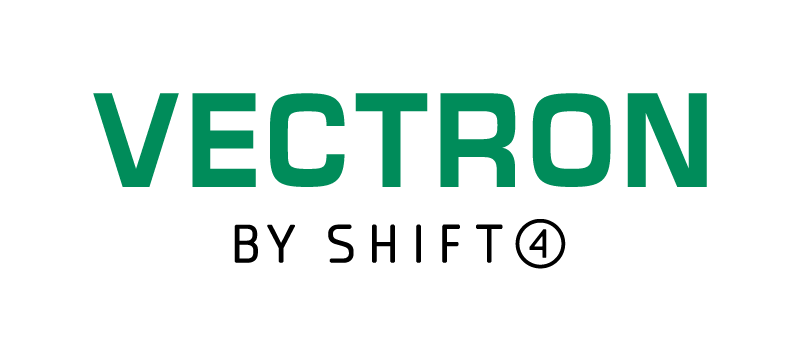
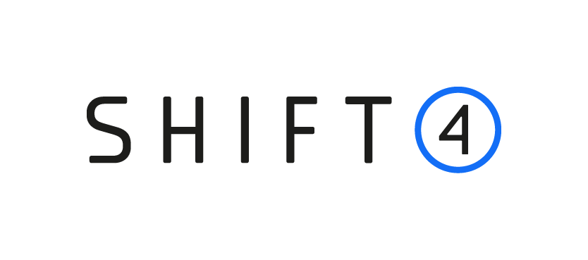
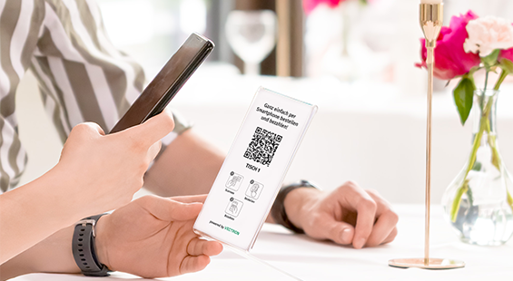
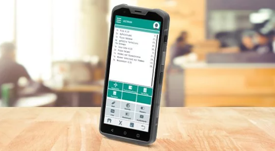
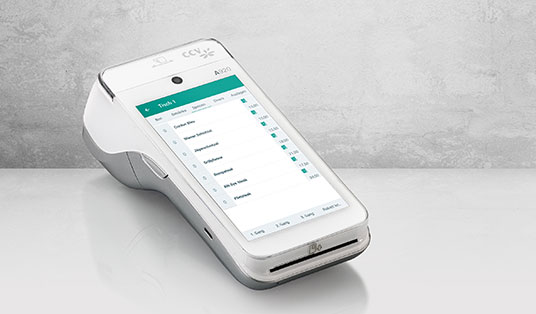
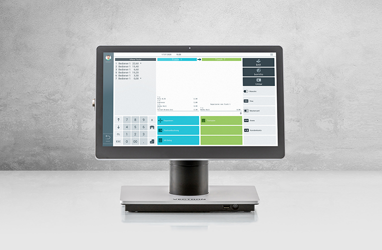
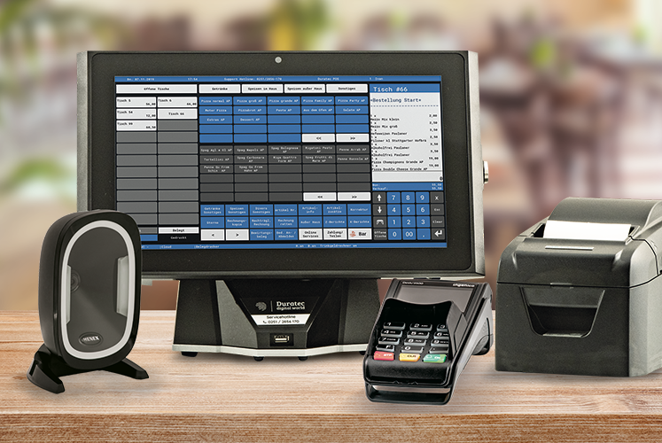
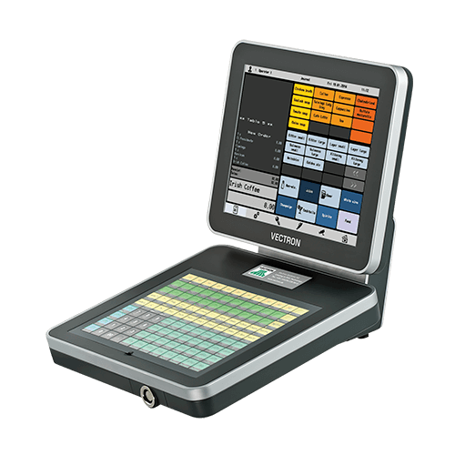
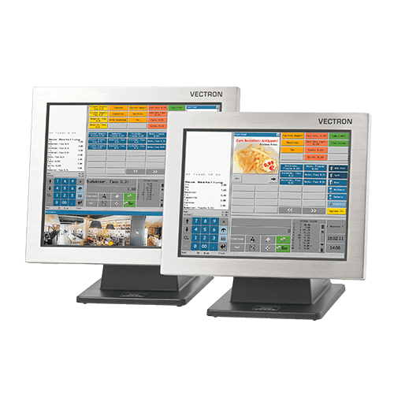
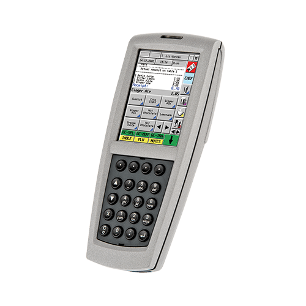
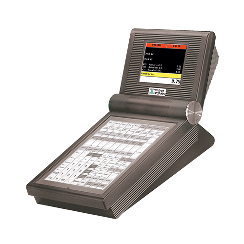
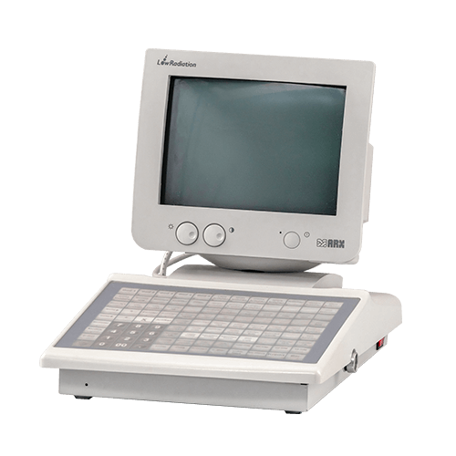